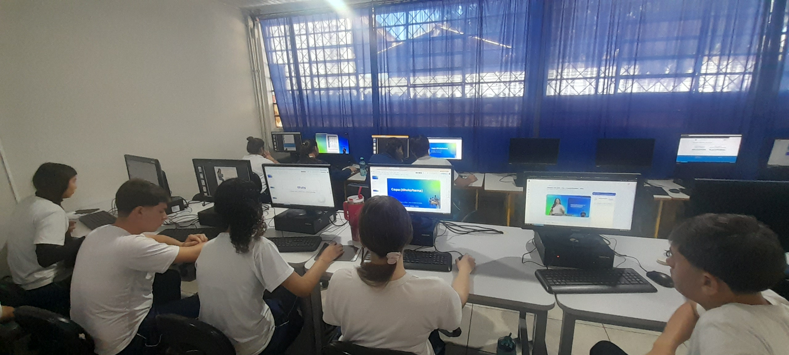

Maratona Tech no Cavalli: Criatividade, Lógica e Protagonismo Juvenil
Equipes de alunos do Ensino Fundamental e Médio mobilizaram-se em maratona de ideação computacional para desenhar soluções práticas a problemas locais, aplicando lógica de programação e automação.
Grêmio de Robótica & Alunos Participantes
Orientador: Prof. Dr. Ricardo D'Ávila · CCM João Cavalli